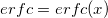

Erfc-func
 calculates an approximate value for the complement of the error function
The approximation is based on a Chebyshev expansion.
For more information please review the s15adc function in the NAG document.